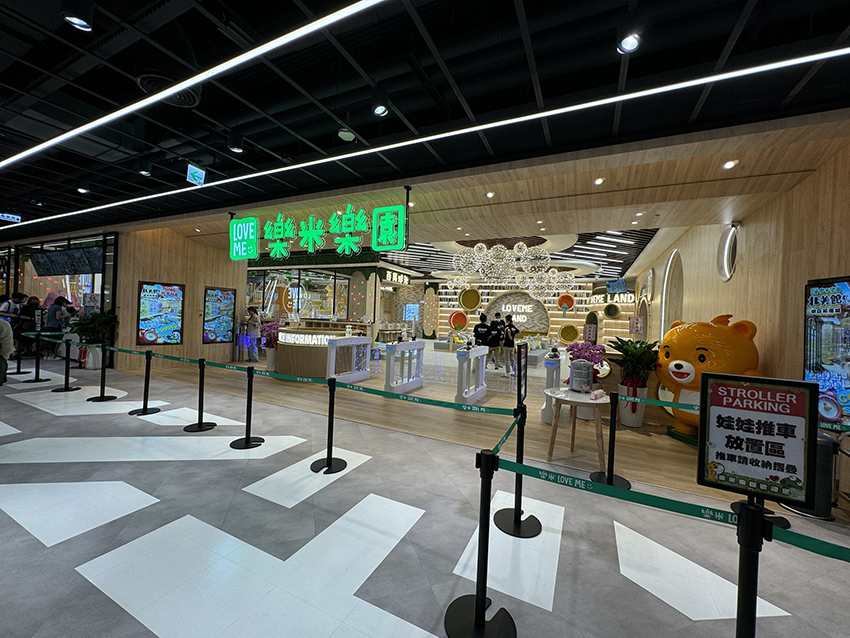
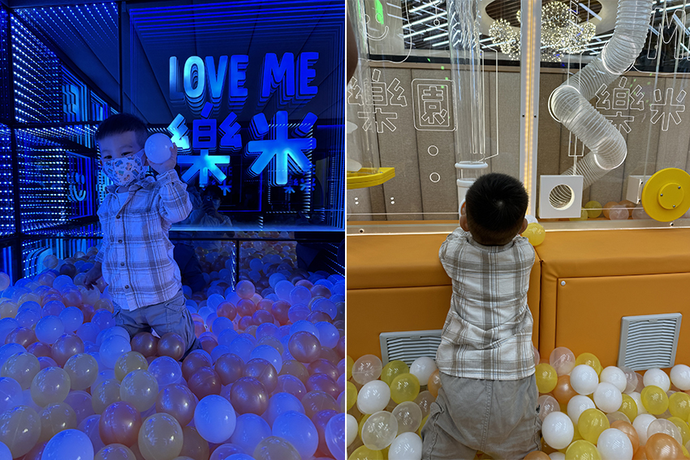
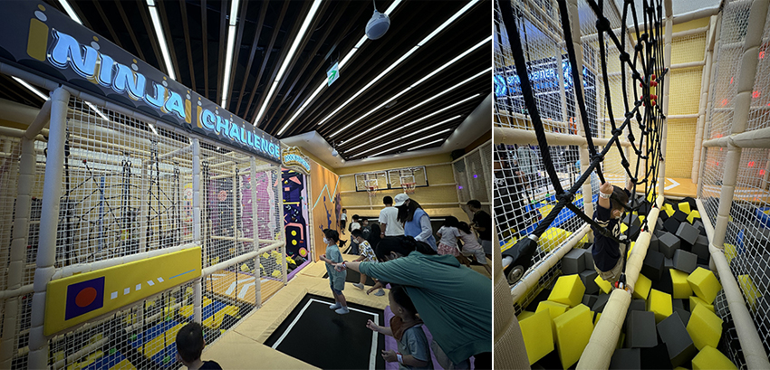
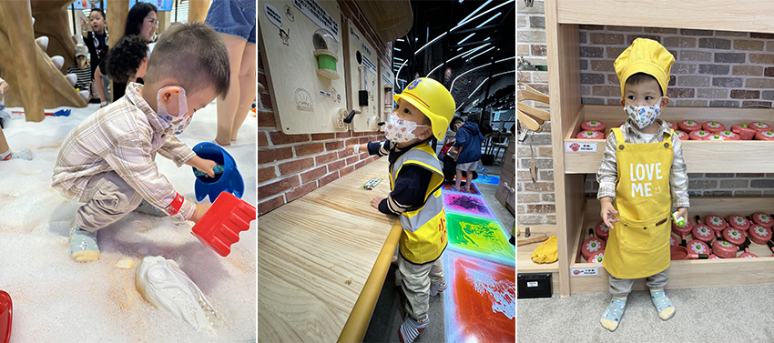
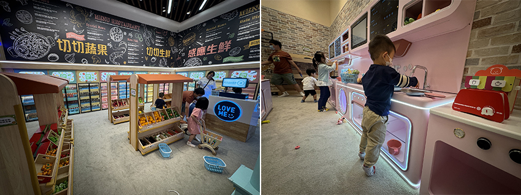

今天要跟大家分享的是10月開始試營運的樂米樂園北美館，位於新店裕隆城六樓，擁有450坪的寬敞室內空間。樂園內設施豐富，包含百萬球池區、3D大蹦床區、恐龍考古沙池、工程軌道基地、貴婦廚房、皇家超市區，甚至還貼心地設置了超豪華的家長休息沙發區XD。
過去帶小孩去室內樂園玩，總得跑到其他行政區，來回要花半小時左右，現在終於不用這麼折騰了！新店的親子室內樂園終於誕生了！（灑花）而且樂園使用大量原木打造，環境顯得寬敞明亮、乾淨整潔。
|  |
百萬球池區
一進入這個區域，小孩看到球池就非常興奮地跳進去，因為這裡的球池超大超好玩，四周都有設計各種管道，讓小孩可以將球投入其中，當球球積累到一定數量時，會瞬間像雨一樣從天而降。後方的溜滑梯更是特別，階梯設計成鋼琴按鍵，每走一步都會發出音樂聲，讓孩子樂在其中，互動感滿分！
|  |
3D大蹦床區
這一區有多面彈跳床，小朋友們可以在這裡盡情彈跳釋放精力。區域內還設有闖關區，讓小朋友體驗多種平衡挑戰。後方的攀爬區更是讓較大年齡的小朋友可以練習攀岩，這個區域不僅讓孩子們訓練體能，也讓他們在運動中找到樂趣。
|  |
恐龍考古沙池
喜歡挖掘的小朋友千萬不能錯過「恐龍考古沙池」。入口處就有一隻恐龍模型，讓人一秒進入探險模式。小朋友可以使用現場提供的工具，仔細挖掘隱藏在沙中的恐龍化石。這個區域不僅好玩，還充滿了教育意義呢！
|  |
工程軌道基地
小朋友可以穿上工程服扮演小小工程師，並透過操作牆上的各種按鈕，體驗發光、發電和發聲的原理。中間還有玩具車軌道，小朋友們可以盡情觀察小車在軌道上快速行駛的過程，玩得不亦樂乎。
貴婦廚房與皇家超市區
「貴婦廚房」和「皇家超市區」應該是我見過最豪華的家家酒區域了！孩子們可以換上廚師服，變身為小小主廚。廚房內的設備非常先進，當孩子將玩具食材放在感應器上時，屏幕上會播放介紹該食材的動畫，趣味十足。旁邊的「皇家超市」則物品齊全，讓孩子們可以盡情「採購」，後方還有自動感應結帳機器，讓他們模擬現實生活的購物過程。
|  |
家長休息沙發區
對於我們這些陪玩的家長來說，「家長休息沙發區」是個福音。沙發非常舒適，讓我們能夠稍微放鬆，同時還有筆電專用區，可以在孩子玩樂的時候處理一些工作，真的非常貼心。
樂米樂園不僅讓孩子們玩得開心盡興，家長們也能享受片刻的放鬆。每個區域的設計既有趣又安全，無論是鍛鍊動手能力還是挑戰體能，這裡都能滿足不同年齡層的需求。新店的家長們終於不用跑遠了，樂米樂園必定成為我們家庭週末的首選遊樂場所之一。更棒的是，玩累了之後，還可以順便在裕隆城吃飯、購物，一整天都能輕鬆度過。